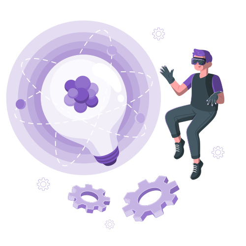

Yoga
Do you need someone reliable, creative and hard-working in your team? If you're looking towards employing a person who's eager to learn and work in the web design and marketing industry, you've clicked the right link. If I've captured your attention, please feel free to scroll through my portfolio.
My name is Raluca, I am 22 years old I'm looking forward to starting a new chapter in my life. My thirst for knowledge is insatiable, and I think this must the reason why be the reason why I love spending most of my time learning new things and reading books. Some of my passions and hobbies are:
Yoga
Reading
Gaming
Cycling
Web Design
Due to the year spent on learning design, I've aquired a basic knowledge in web design and in the programs listed below.
Graphic Design
Due to the year spent on learning design, I've aquired a basic knowledge in graphic design and in the programs listed below.
UX Design
Due to the year spent on learning design, I have a basic knowledge in user experience design and in the programs listed below.
SEO
I've also aquired a basic knowledge in search engine optimization by completing a certified course.
Marketing
Due to the year spent on learning design, I've aquired a basic knowledge in graphic design and in the programs listed below.
E-Mail Marketing
Due to the year spent on learning design, I have a basic knowledge in user experience design and in the programs listed below.
I have studied this profile while attending to the Agricultural College "Traian Savulescu" of Tirgu-Mures. Here I had the opportunity to learn many skills, such as managing my finances, doing primary accounting, and improving my english thanks to my wonderful teachers that supported me throughout this four year-long journey.
I went to the University of Medicine, Pharmacy, Science and Technology "George Emil-Palade" of Tirgu-Mures, hoping that my creativity will be harnessed and I could have the capacity to help people trough my work. Unfortunately, there were only a few moments in which I felt like it could help me achieve my goals, so I quit during the 2nd year and started to learn IT by myself, hoping it will help me fulfill my purpose.
While being a student at UMFST, I got out my confort zone and became a volunteer in an organization called AIESEC. There I worked with amazing people on promoting and managing student exchange projects. As a team leader, I managed 8 wonderful members and by working as a team, we worked towards our goals and prepared the steps required for student exchanges.
While trying to hone my designing and coding skills, I took a SEO Course on Hubspot Academy to get myself familiarized with search engines and their algorithms. This course helped me understand how to design websites that rank higher in the organic search results, thus helping a business' marketing strategy.
Because I love to learn new things, I tried my luck and learned the basics of Digital Marketing with Google's Digital Garage . In 2017 I took the course, but because of an update of their platform I've lost the credentials, so I took the course again this year to refresh my memory.
Due to these two courses, I've re-developed an interest in marketing, fact which pushed me to keep learning about this field, so I took another one, an E-Mail Marketing course on Hubspot Academy . Here I've learned how to send proper e-mails based on user research, the buyer stages they're in, so basically how to do it right.
After E-mail Marketing attracted my attention and inspired me to learn more, I took the Content Marketing course on Hubspot Academy . It was an eye-opener, because even at university we didn't cover as much information as the teachers did here. I've learned the importance of a human, friendly, kind and interactive content when it comes to promoting products to customers.
Click here to copy my email address or contact me through this form.